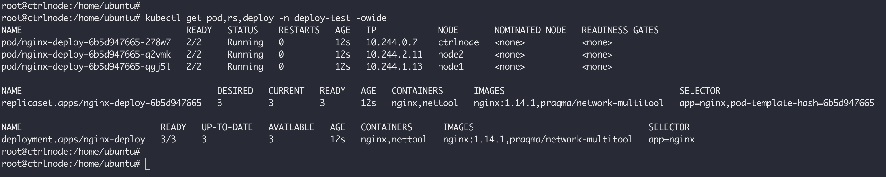
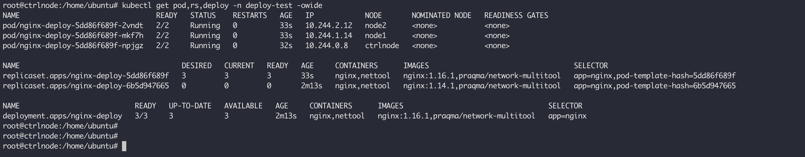
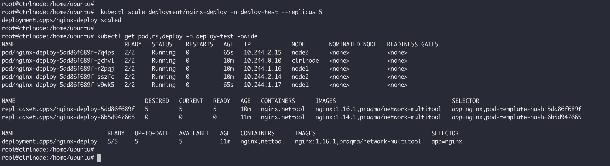
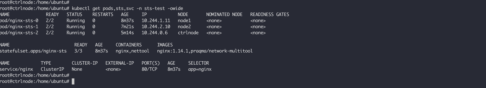
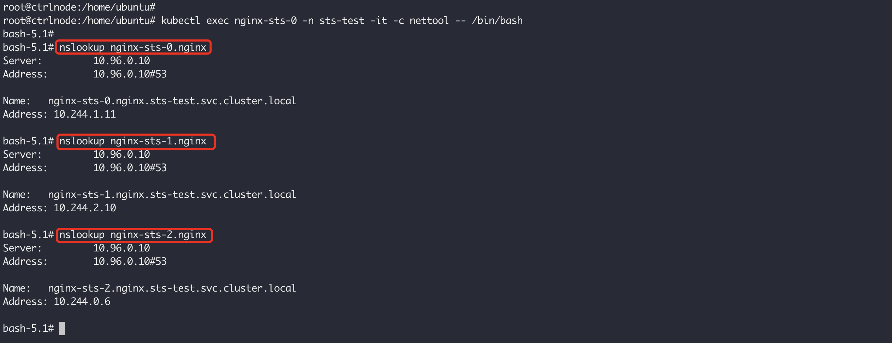
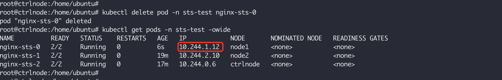

Pod 是K8S中的调度单位，它是一个逻辑概念，用于将一些关系密切的容器部署在一起提供对外服务，这些容器互相之间会发生直接的文件交换、使用localhost或者Socket文件进行本地通信、会发生非常频繁的远程调用、需要共享某些Linux Namespace等等，Pod 中的所有容器都共享同一个Network Namespace。K8S 中为了实现不同的目的，在Pod基础之上衍生出了不同的部署模型，例如，常见的 Deployment、Replicaset、以及StatefulSet等等，本文就来举例并且说明它们之间的区别。
这些对象之间的关系如下图所示：
Pod 这个看似复杂的API对象，实际上就是对容器的进一步抽象和封装而已，Pod对象，其实就是容器的升级版，它对容器进行了组合，添加了更多的属性和字段。依据PodAPI 编写一个Pod模板，然后使用kubectl提交到集群中，这个Pod里面包含两个容器，whoami监听80端口，提供一个简单的服务返回主机名，nettool 是一个工具容器，提供了很多可用的网络工具供测试使用：
1 2 3 4 5 6 7 8 9 10 11 12 13 14 15 16 17 18 19 20 21 22 23 24 25 26 27 28 29 30 kubectl apply -f - <<EOF apiVersion: v1 kind: Namespace metadata: name: whoami labels: app.kubernetes.io/part-of: whoami app.kubernetes.io/name: whoami --- apiVersion: v1 kind: Pod metadata: name: whoami namespace: whoami labels: app.kubernetes.io/part-of: whoami app.kubernetes.io/name: whoami spec: containers: - name: whoami image: traefik/whoami imagePullPolicy: IfNotPresent ports: - containerPort: 80 - name: nettool image: praqma/network-multitool imagePullPolicy: IfNotPresent command: ["sleep"] args: ["86400"] EOF
执行之后，使用下面的命令查看创建成功的Pod：
1 2 3 $ kubectl get pods -n whoami -owide NAME READY STATUS RESTARTS AGE IP NODE NOMINATED NODE READINESS GATES whoami 2/2 Running 0 92s 10.42.0.221 ctrlnode <none> <none>
查看Pod中的容器：
1 2 $ kubectl get pods -n whoami whoami -o jsonpath={.spec.containers[*].name} whoami nettool
进入nettool，通过localhost就能访问whoami容器中的服务，因为它们共享网络栈，在同一个网络空间内：
1 2 3 4 5 6 7 8 9 10 11 12 13 14 15 $ kubectl exec whoami -n whoami -it -c nettool -- /bin/bash bash-5.1# bash-5.1# netstat -tualnp | grep LISTEN tcp6 0 0 :::80 :::* LISTEN - bash-5.1# curl localhost Hostname: whoami IP: 127.0.0.1 IP: 10.42.0.221 RemoteAddr: 127.0.0.1:34488 GET / HTTP/1.1 Host: localhost User-Agent: curl/7.79.1 Accept: */* bash-5.1#
测试环境中使用docker作为容器运行时，查看Pod中的容器时，会存在一个pause容器，它使用的是一个非常特殊的镜像，叫作：k8s.gcr.io/pause，这个镜像是一个用汇编语言编写的、永远处于暂停状态的容器，解压后的大小也只有100~200 KB左右。在这Pause容器启动之后，Pod中的其他容器就可以加入这个Pause容器的命名空间，从而实现共享，但是mnt、pid以及uts这三个命名空间默认不共享，pid可以通过spec.shareProcessNamespace单独设置：
1 2 3 4 5 6 7 8 9 10 11 12 13 14 15 16 17 18 19 20 21 22 23 24 25 26 27 28 29 30 31 32 33 34 35 36 37 38 39 40 $ docker ps | grep whoami 52d2b3478c88 1631e536ed7d "sleep 86400" 15 minutes ago Up 15 minutes k8s_nettool_whoami_whoami_.. 089341cdc151 e21a57f872ce "/whoami" 15 minutes ago Up 15 minutes k8s_whoami_whoami_whoami_.. 0bd146217958 rancher/mirrored-pause:3.6 "/pause" 15 minutes ago Up 15 minutes k8s_POD_whoami_whoami_.. $ ll /proc/"$(docker inspect --format "{{ .State.Pid }}" 52d2b3478c88)"/ns total 0 dr-x--x--x 2 root root 0 Jan 11 20:16 ./ dr-xr-xr-x 9 root root 0 Jan 11 20:11 ../ lrwxrwxrwx 1 root root 0 Jan 11 20:28 cgroup -> 'cgroup:[4026531835]' lrwxrwxrwx 1 root root 0 Jan 11 20:16 ipc -> 'ipc:[4026533554]' lrwxrwxrwx 1 root root 0 Jan 11 20:16 mnt -> 'mnt:[4026533901]' lrwxrwxrwx 1 root root 0 Jan 11 20:16 net -> 'net:[4026533557]' lrwxrwxrwx 1 root root 0 Jan 11 20:16 pid -> 'pid:[4026533903]' lrwxrwxrwx 1 root root 0 Jan 11 20:28 pid_for_children -> 'pid:[4026533903]' lrwxrwxrwx 1 root root 0 Jan 11 20:28 user -> 'user:[4026531837]' lrwxrwxrwx 1 root root 0 Jan 11 20:16 uts -> 'uts:[4026533902]' $ ll /proc/"$(docker inspect --format "{{ .State.Pid }}" 089341cdc151)"/ns total 0 dr-x--x--x 2 root root 0 Jan 11 20:28 ./ dr-xr-xr-x 9 root root 0 Jan 11 20:11 ../ lrwxrwxrwx 1 root root 0 Jan 11 20:29 cgroup -> 'cgroup:[4026531835]' lrwxrwxrwx 1 root root 0 Jan 11 20:29 ipc -> 'ipc:[4026533554]' lrwxrwxrwx 1 root root 0 Jan 11 20:29 mnt -> 'mnt:[4026533778]' lrwxrwxrwx 1 root root 0 Jan 11 20:28 net -> 'net:[4026533557]' lrwxrwxrwx 1 root root 0 Jan 11 20:29 pid -> 'pid:[4026533780]' lrwxrwxrwx 1 root root 0 Jan 11 20:29 pid_for_children -> 'pid:[4026533780]' lrwxrwxrwx 1 root root 0 Jan 11 20:29 user -> 'user:[4026531837]' lrwxrwxrwx 1 root root 0 Jan 11 20:29 uts -> 'uts:[4026533779]' $ ll /proc/"$(docker inspect --format "{{ .State.Pid }}" 0bd146217958)"/ns total 0 dr-x--x--x 2 65535 65535 0 Jan 11 20:11 ./ dr-xr-xr-x 9 65535 65535 0 Jan 11 20:11 ../ lrwxrwxrwx 1 65535 65535 0 Jan 11 20:41 cgroup -> 'cgroup:[4026531835]' lrwxrwxrwx 1 65535 65535 0 Jan 11 20:11 ipc -> 'ipc:[4026533554]' lrwxrwxrwx 1 65535 65535 0 Jan 11 20:41 mnt -> 'mnt:[4026533552]' lrwxrwxrwx 1 65535 65535 0 Jan 11 20:11 net -> 'net:[4026533557]' lrwxrwxrwx 1 65535 65535 0 Jan 11 20:41 pid -> 'pid:[4026533555]' lrwxrwxrwx 1 65535 65535 0 Jan 11 20:41 pid_for_children -> 'pid:[4026533555]' lrwxrwxrwx 1 65535 65535 0 Jan 11 20:41 user -> 'user:[4026531837]' lrwxrwxrwx 1 65535 65535 0 Jan 11 20:41 uts -> 'uts:[4026533553]'
清理现场使用下面的命令：
kubectl delete ns --cascade whoami
Pod 将具有亲密关系的容器部署在同一个盒子中，统一对外提供服务，但是当流量较多的时候，单个Pod就无法支撑，这个时候就需要多个实例，这正是ReplicaSet的意义，为Pod提供多实例部署，根据需要实现水平扩缩容。下面是一个ReplicaSet对象的示例：
1 2 3 4 5 6 7 8 9 10 11 12 13 14 15 16 17 18 19 20 21 22 23 24 25 26 27 28 29 30 31 32 33 34 35 36 37 38 39 40 kubectl apply -f - <<EOF apiVersion: v1 kind: Namespace metadata: name: rs labels: app.kubernetes.io/part-of: nginx-rs app.kubernetes.io/name: nginx-rs --- apiVersion: apps/v1 kind: ReplicaSet metadata: name: nginx-rs namespace: rs labels: app: nginx app.kubernetes.io/part-of: nginx-rs app.kubernetes.io/name: nginx-rs spec: replicas: 3 selector: matchLabels: app: nginx template: metadata: labels: app: nginx spec: containers: - name: nginx image: nginx:1.14.1 imagePullPolicy: IfNotPresent ports: - containerPort: 80 - name: nettool image: praqma/network-multitool imagePullPolicy: IfNotPresent command: ["sleep"] args: ["86400"] EOF
相较于Pod，ReplicaSet 增加了一些字段：
.spec.replicas 表示这个 ReplicaSet 对象的副本个数，会将匹配的Pod扩展到这个数量；.spec.selector.matchLabels 用于匹配根据标签Pod，表示这个ReplicaSet对象要作用到哪些Pod上；.spec.template 是一个完整的Pod模板，用于描述这个ReplicaSet管理的Pod，其中.spec.template.metadata.labels 用于给Pod打标签，通常它至少包含.spec.selector.matchLabels，这样ReplicaSet的策略才能作用到这个Pod，.spec.template.spec.containers 就是用来描述Pod中的容器；
执行上面的命令之后，查看新建的的Pod 和 ReplicaSet 对象，这3个不同的Pod表示不同的副本：
1 2 3 4 5 6 7 8 $ kubectl get pods,rs -n rs -owide NAME READY STATUS RESTARTS AGE IP NODE NOMINATED NODE READINESS GATES pod/nginx-rs-fgsmp 2/2 Running 0 11m 10.42.0.227 node1 <none> <none> pod/nginx-rs-5qrm6 2/2 Running 0 11m 10.42.0.226 node1 <none> <none> pod/nginx-rs-zz74s 2/2 Running 0 11m 10.42.0.225 node1 <none> <none> NAME DESIRED CURRENT READY AGE CONTAINERS IMAGES SELECTOR replicaset.apps/nginx-rs 3 3 3 11m nginx,nettool nginx:1.14.1,praqma/network-multitool app=nginx
在 rs 的输出中，DESIRED 表示期望的副本数量，CURRENT 表示当前处于 Running 状态的数量，READY 表示既是 Running 又健康检查ok的数量，关于健康检查请看这里 。清理现场使用下面的命令：
kubectl delete ns --cascade rs
通常情况下，我们在生产环境不会直接使用 ReplicaSet，因为它不支持滚动更新，所谓的滚动更新就是当我们升级Pod的时候，可以在不中断服务的情况下，通过交替升级的方式，让所有的Pod都达到最新的状态，除此之外还可以实现版本控制，根据需要回滚到具体的版本，这些操作对于 ReplicaSet 就得手动操作。下面是一个Deployment 的示例：
1 2 3 4 5 6 7 8 9 10 11 12 13 14 15 16 17 18 19 20 21 22 23 24 25 26 27 28 29 30 31 32 33 34 35 36 37 38 39 40 41 42 43 44 45 kubectl apply --record -f - <<EOF apiVersion: v1 kind: Namespace metadata: name: deploy-test labels: app.kubernetes.io/part-of: nginx-deploy app.kubernetes.io/name: nginx-deploy --- apiVersion: apps/v1 kind: Deployment metadata: name: nginx-deploy namespace: deploy-test labels: app: nginx app.kubernetes.io/part-of: nginx-deploy app.kubernetes.io/name: nginx-deploy spec: replicas: 3 selector: matchLabels: app: nginx strategy: type: RollingUpdate rollingUpdate: maxSurge: 1 maxUnavailable: 1 template: metadata: labels: app: nginx spec: containers: - name: nginx image: nginx:1.14.1 imagePullPolicy: IfNotPresent ports: - containerPort: 80 - name: nettool image: praqma/network-multitool imagePullPolicy: IfNotPresent command: ["sleep"] args: ["86400"] EOF
相比 ReplicaSet，主要增加了 .spec.strategy 字段，其中：
.spec.strategy.type，表示Pod更新时的策略，默认是RollingUpdate，表示滚动更新，如果取值 Recreate，它会直接将老的Pod停止，再创建新的Pod；.spec.strategy.rollingUpdate，表示滚动更新时的策略：
maxUnavailable，它是一个可选字段，用来指定更新过程中不可用的Pod的个数上限。该值可以是绝对数字（例如，5），也可以是所需 Pod 的百分比（例如，10%）。百分比值会转换成绝对数并去除小数部分。 如果 maxSurge 为 0，则此值不能为 0。 默认值为 25%。例如，当此值设置为30%时，滚动更新开始时会立即将旧ReplicaSet缩容到期望Pod个数的70%。新Pod准备就绪后，可以继续缩容旧有的ReplicaSet，然后对新的ReplicaSet扩容，确保在更新期间可用的Pod总数在任何时候都至少为所需的Pod个数的70%。maxSurge，是一个可选字段，用来指定可以创建的超出期望Pod个数的Pod数量。此值可以是绝对数（例如，5）或所需Pod的百分比（例如，10%）。如果MaxUnavailable为0，则此值不能为0。百分比值会通过向上取整转换为绝对数。此字段的默认值为25%。例如，当此值为30%时，启动滚动更新后，会立即对新的ReplicaSet扩容，同时保证新旧Pod的总数不超过所需Pod总数的130%。一旦旧Pod被杀死，新的ReplicaSet可以进一步扩容，同时确保更新期间的任何时候运行中的Pod总数最多为所需Pod总数的130%。
执行上面的部署命令之后，查询pod、rs以及deployment的状态如下所示：
kubectl get pod,rs,deploy -n deploy-test -owide

从这可以看到，Deployment 通过控制 ReplicaSet来满足Pod 数量的要求，相比ReplicaSet增加了以下字段：
UP-TO-DATE：表示当前处于最新版本的Pod数量，所谓最新版本指的是Pod的Spec部分与Deployment里Pod模板里定义的完全一致；AVAILABLE：当前已经可用的Pod的个数，即：既是Running状态，又是最新版本，并且已经处于Ready（健康检查正确）状态的Pod的个数；
使用下面的命令更新Pod：
kubectl set image -n deploy-test deployment/nginx-deploy nginx=nginx:1.16.1 --record
执行结束之后，查询pod、rs以及deployment的状态如下所示：

可以看到旧的nginx-deploy-6b5d947665已经被缩容至0个Pod，新建的nginx-deploy-5dd86f689f被扩容至3个Pod。通过查看nginx-deploy的详情，可以看到滚动更新的过程：
kubectl describe deploy -n deploy-test nginx-deploy
1 2 3 4 5 6 7 8 9 10 11 12 13 14 15 16 17 18 19 20 21 22 23 24 25 26 27 28 root@ctrlnode:/home/ubuntu# kubectl describe deploy -n deploy-test nginx-deploy Name: nginx-deploy Namespace: deploy-test CreationTimestamp: Fri, 12 Jan 2024 23:18:16 +0800 Labels: app=nginx app.kubernetes.io/name=nginx-deploy app.kubernetes.io/part-of=nginx-deploy Annotations: deployment.kubernetes.io/revision: 2 kubernetes.io/change-cause: kubectl set image deployment/nginx-deploy nginx=nginx:1.16.1 --namespace=deploy-test --record=true Selector: app=nginx Replicas: 3 desired | 3 updated | 3 total | 3 available | 0 unavailable StrategyType: RollingUpdate MinReadySeconds: 0 RollingUpdateStrategy: 1 max unavailable, 1 max surge Pod Template: ... OldReplicaSets: nginx-deploy-6b5d947665 (0/0 replicas created) NewReplicaSet: nginx-deploy-5dd86f689f (3/3 replicas created) Events: Type Reason Age From Message ---- ------ ---- ---- ------- Normal ScalingReplicaSet 9m6s deployment-controller Scaled up replica set nginx-deploy-6b5d947665 to 3 Normal ScalingReplicaSet 8m9s deployment-controller Scaled up replica set nginx-deploy-5dd86f689f to 1 Normal ScalingReplicaSet 8m9s deployment-controller Scaled down replica set nginx-deploy-6b5d947665 to 2 from 3 Normal ScalingReplicaSet 8m9s deployment-controller Scaled up replica set nginx-deploy-5dd86f689f to 2 from 1 Normal ScalingReplicaSet 8m8s deployment-controller Scaled down replica set nginx-deploy-6b5d947665 to 1 from 2 Normal ScalingReplicaSet 8m8s deployment-controller Scaled up replica set nginx-deploy-5dd86f689f to 3 from 2 Normal ScalingReplicaSet 8m8s deployment-controller Scaled down replica set nginx-deploy-6b5d947665 to 0 from 1
滚动更新过程中可以使用下面的命令查看滚动更新的过程：
kubectl rollout status -n deploy-test deployment/nginx-deploy
1 2 $ kubectl rollout status -n deploy-test deployment/nginx-deploy deployment "nginx-deploy" successfully rolled out
滚动更新的历史可以使用下面的命令查看：
kubectl rollout history -n deploy-test deployment/nginx-deploy
1 2 3 4 5 root@ctrlnode:/home/ubuntu# kubectl rollout history -n deploy-test deployment/nginx-deploy deployment.apps/nginx-deploy REVISION CHANGE-CAUSE 1 kubectl apply --record=true --filename=- 2 kubectl set image deployment/nginx-deploy nginx=nginx:1.16.1 --namespace=deploy-test --record=true
当更新出错，或者需要回滚到历史版本的时候，可以使用下面的命令进行操作，--to-revision指定目标历史版本：
kubectl rollout undo -n deploy-test deployment/nginx-deploy --to-revision=1
1 2 $ kubectl rollout undo -n deploy-test deployment/nginx-deploy --to-revision=1 deployment.apps/nginx-deploy rolled back
可以使用下面的命令对Deployment 进行扩缩容：
kubectl scale deployment/nginx-deploy -n deploy-test --replicas=5

在Deployment中，所有Pod是完全一样的，它们互相之间没有顺序，也无所谓运行在哪台宿主机上。需要的时候，Deployment就可以通过Pod模板创建新的Pod，不需要的时候，Deployment就可以杀掉任意一个Pod。但是，在实际的场景中，并不是所有的应用都可以满足这样的要求。尤其是分布式应用，它的多个实例之间，往往有依赖关系，比如：主从关系、主备关系。还有就是数据存储类应用，它的多个实例，往往都会在本地磁盘上保存一份数据。而这些实例一旦被杀掉，即便重建出来，实例与数据之间的对应关系也已经丢失，从而导致应用失败。所以，这种实例之间有不对等关系，以及实例对外部数据有依赖关系的应用，就被称为有状态应用（Stateful Application）。Kubernetes项目很早就在Deployment的基础上，扩展出了对有状态应用的初步支持，这个编排功能，就是：StatefulSet ，它提供了：稳定的、唯一的网络标识符，持久的数据存储，相较于 Deployment，StatefulSet直接管理的是Pod，而不是ReplicaSet，这是因为，StatefulSet里的不同Pod实例，不再像ReplicaSet中那样都是完全一样的，而是有了细微区别的。比如，每个Pod的hostname、名字等都是不同的、携带了编号的。而StatefulSet区分这些实例的方式，就是通过在Pod的名字里加上事先约定好的编号。
先来看下网络持久化是怎么做到的，下面是用来验证的示例：
1 2 3 4 5 6 7 8 9 10 11 12 13 14 15 16 17 18 19 20 21 22 23 24 25 26 27 28 29 30 31 32 33 34 35 36 37 38 39 40 41 42 43 44 45 46 47 48 49 50 51 52 53 54 55 56 kubectl apply -f - <<EOF apiVersion: v1 kind: Namespace metadata: name: sts-test labels: app.kubernetes.io/part-of: nginx-sts app.kubernetes.io/name: nginx-sts --- apiVersion: v1 kind: Service metadata: name: nginx namespace: sts-test labels: app: nginx spec: ports: - port: 80 name: web clusterIP: None selector: app: nginx --- apiVersion: apps/v1 kind: StatefulSet metadata: name: nginx-sts namespace: sts-test labels: app: nginx app.kubernetes.io/part-of: nginx-sts app.kubernetes.io/name: nginx-sts spec: replicas: 3 serviceName: "nginx" selector: matchLabels: app: nginx template: metadata: labels: app: nginx spec: containers: - name: nginx image: nginx:1.14.1 imagePullPolicy: IfNotPresent ports: - containerPort: 80 - name: nettool image: praqma/network-multitool imagePullPolicy: IfNotPresent command: ["sleep"] args: ["86400"] EOF
当执行上面的命令之后，除了创建 StatefulSet 对象之外，还会创建一个nginx无头服务：
kubectl get pods,sts,svc -n sts-test -owide

这个nginx无头服务创建之后，它所代理的Pod都会被分配一个固定的DNS记录，如下面的格式：
<pod-name>.<svc-name>.<namespace>.svc.cluster.local
使用下面的命令进入nettool这个工具容器进行验证，可以看到每个Pod的地址都被正确解析，StatefulSet中的.spec.serviceName字段就是告诉StatefulSet控制器，在创建这写Pod的时候，使用nginx这个无头服务来保证Pod的网络身份稳定：
kubectl exec nginx-sts-0 -n sts-test -it -c nettool -- /bin/bash

从上面的Pod的名字也可以看出和Deployment的区别，StatefulSet使用固定了的编号，<sts-name>-<index>，这些编号从0开始累加，而且这些Pod的创建也是严格按照编号顺序进行的，在nginx-sts-0进入Ready之前，nginx-sts-1会一直Pending。而且即使将nginx-sts-0删除之后，创建出来的Pod名称依然是nginx-sts-0，这就是所谓的网络持久化，网络身份固定，当我们使用 nginx-sts-0.nginx 这个域名访问时，依然可以解析到正确的Pod，但是IP发生了变化，所以对于有状态的实例进行访问，应该使用域名：

有状态Pod除了网络身份持久化之外，就是存储状态持久化了，希望在Pod重启或者重建之后，依然保证数据库不丢失。在开始之后，需要先制作PV供有状态的Pod使用，本地测试为了简单，直接使用hostpath来制作。选定k8s中的某个节点，例如，ctrlnode，执行下面的命令：
1 2 3 4 5 6 7 $ kubectl label nodes ctrlnode pvtype=hostpath $ mkdir -p /mnt/k8s/hostpath/ $ cd /mnt/k8s/hostpath/ $ mkdir v1 v2 v3 $ echo "hello from hostpath v1" >> v1/index.html $ echo "hello from hostpath v2" >> v2/index.html $ echo "hello from hostpath v3" >> v3/index.html
给ctrlnode打上标签是为了后面在创建StatefulSet的时候，让Pod都调度到ctrlnode上。接下来创建PV以及Pod：
1 2 3 4 5 6 7 8 9 10 11 12 13 14 15 16 17 18 19 20 21 22 23 24 25 26 27 28 29 30 31 32 33 34 35 36 37 38 39 40 41 42 43 44 45 46 47 48 49 50 51 52 53 54 55 56 57 58 59 60 61 62 63 64 65 66 67 68 69 70 71 72 73 74 75 76 77 78 79 80 81 82 83 84 85 86 87 88 89 90 91 92 93 94 95 96 97 98 99 100 101 102 103 104 105 106 107 108 109 110 111 112 113 114 115 116 117 118 119 120 121 122 123 kubectl apply -f - <<EOF apiVersion: v1 kind: PersistentVolume metadata: name: pv-hostpath-v1 labels: type: local spec: storageClassName: manual capacity: storage: 1Gi accessModes: - ReadWriteOnce hostPath: path: "/mnt/k8s/hostpath/v1" --- apiVersion: v1 kind: PersistentVolume metadata: name: pv-hostpath-v2 labels: type: local spec: storageClassName: manual capacity: storage: 1Gi accessModes: - ReadWriteOnce hostPath: path: "/mnt/k8s/hostpath/v2" --- apiVersion: v1 kind: PersistentVolume metadata: name: pv-hostpath-v3 labels: type: local spec: storageClassName: manual capacity: storage: 1Gi accessModes: - ReadWriteOnce hostPath: path: "/mnt/k8s/hostpath/v3" --- apiVersion: v1 kind: Namespace metadata: name: sts-test labels: app.kubernetes.io/part-of: nginx-sts app.kubernetes.io/name: nginx-sts --- apiVersion: v1 kind: Service metadata: name: nginx namespace: sts-test labels: app: nginx spec: ports: - port: 80 name: web clusterIP: None selector: app: nginx --- apiVersion: apps/v1 kind: StatefulSet metadata: name: nginx-sts namespace: sts-test labels: app: nginx app.kubernetes.io/part-of: nginx-sts app.kubernetes.io/name: nginx-sts spec: replicas: 3 serviceName: "nginx" selector: matchLabels: app: nginx volumeClaimTemplates: - metadata: name: www spec: storageClassName: manual accessModes: - ReadWriteOnce resources: requests: storage: 1Gi template: metadata: labels: app: nginx spec: affinity: nodeAffinity: requiredDuringSchedulingIgnoredDuringExecution: nodeSelectorTerms: - matchExpressions: - key: pvtype operator: In values: - hostpath containers: - name: nginx image: nginx:1.14.1 imagePullPolicy: IfNotPresent ports: - containerPort: 80 volumeMounts: - name: www mountPath: "/usr/share/nginx/html" - name: nettool image: praqma/network-multitool imagePullPolicy: IfNotPresent command: ["sleep"] args: ["86400"] EOF
创建成功之后，可以使用下面的命令进行验证：
kubectl get pv,pvc,svc,sts,pod -n sts-test -owide
1 2 3 4 5 6 7 8 9 10 11 12 13 14 15 16 17 18 19 20 21 22 $ kubectl get pv,pvc,svc,sts,pod -n sts-test -owide NAME CAPACITY ACCESS MODES RECLAIM POLICY STATUS CLAIM STORAGECLASS REASON AGE VOLUMEMODE ... persistentvolume/pv-hostpath-v1 1Gi RWO Retain Bound sts-test/www-nginx-sts-0 manual 16s Filesystem persistentvolume/pv-hostpath-v2 1Gi RWO Retain Bound sts-test/www-nginx-sts-1 manual 16s Filesystem persistentvolume/pv-hostpath-v3 1Gi RWO Retain Bound sts-test/www-nginx-sts-2 manual 16s Filesystem NAME STATUS VOLUME CAPACITY ACCESS MODES STORAGECLASS AGE VOLUMEMODE persistentvolumeclaim/www-nginx-sts-0 Bound pv-hostpath-v1 1Gi RWO manual 16s Filesystem persistentvolumeclaim/www-nginx-sts-1 Bound pv-hostpath-v2 1Gi RWO manual 13s Filesystem persistentvolumeclaim/www-nginx-sts-2 Bound pv-hostpath-v3 1Gi RWO manual 10s Filesystem NAME TYPE CLUSTER-IP EXTERNAL-IP PORT(S) AGE SELECTOR service/nginx ClusterIP None <none> 80/TCP 16s app=nginx NAME READY AGE CONTAINERS IMAGES statefulset.apps/nginx-sts 3/3 16s nginx,nettool nginx:1.14.1,praqma/network-multitool NAME READY STATUS RESTARTS AGE IP NODE NOMINATED NODE READINESS GATES pod/nginx-sts-0 2/2 Running 0 16s 10.42.0.6 ctrlnode <none> <none> pod/nginx-sts-1 2/2 Running 0 13s 10.42.0.7 ctrlnode <none> <none> pod/nginx-sts-2 2/2 Running 0 10s 10.42.0.8 ctrlnode <none> <none>
可以看到的是3个Pod都绑定到了不同的PV，可以使用下面的命令进行验证：
for i in 0 1 2; do kubectl exec nginx-sts-$i -n sts-test -c nettool -- curl localhost; done
1 2 3 4 # for i in 0 1 2; do kubectl exec nginx-sts-$i -n sts-test -c nettool -- curl localhost; done hello from hostpath v1 hello from hostpath v2 hello from hostpath v3
有状态的Pod会有数据数据写入到Pod挂载的Volume中，模拟这个写入，可以使用下面的命令将主机明写入到index.html中：
for i in 0 1 2; do kubectl exec nginx-sts-$i -n sts-test -c nginx -- sh -c 'echo hello $(hostname) > /usr/share/nginx/html/index.html'; done
1 2 3 4 5 $ for i in 0 1 2; do kubectl exec nginx-sts-$i -n sts-test -c nginx -- sh -c 'echo hello $(hostname) > /usr/share/nginx/html/index.html'; done $ for i in 0 1 2; do kubectl exec nginx-sts-$i -n sts-test -c nettool -- curl localhost; done hello nginx-sts-0 hello nginx-sts-1 hello nginx-sts-2
此时查看ctrlnode上的/mnt/k8s/hostpath/中的内容，也会被相应的修改。有状态的Pod重点在于Pod重建数据不丢失，所以即使现在删除3个Pod之后，重建出来的Pod还是会挂载原来的数据卷，也就是从nginx-sts-0中访问到的依然是hello nginx-sts-0：
1 2 3 4 5 6 7 8 $ kubectl delete pod -n sts-test nginx-sts-0 nginx-sts-1 nginx-sts-2 pod "nginx-sts-0" deleted pod "nginx-sts-1" deleted pod "nginx-sts-2" deleted $ for i in 0 1 2; do kubectl exec nginx-sts-$i -n sts-test -c nettool -- curl localhost; done hello nginx-sts-0 hello nginx-sts-1 hello nginx-sts-2
这是因为当把一个Pod，比如nginx-sts-0，删除之后，这个Pod对应的PVC和PV，并不会被删除，而这个Volume里已经写入的数据，也依然会保存在ctrlnode的/mnt/k8s/hostpath/下。Pod重建的时候，StatefulSet还为每一个Pod分配并创建一个同样编号的PVC，所以还是会使用www-nginx-sts-0这个PVC去申请存储并且和nginx-sts-0绑定，由于这个PVC并未被删除，所以直接绑定即可，数据还是原来的。通过这种方式，Kubernetes的StatefulSet就实现了对应用存储状态的管理，实现了存储持久化。
如果我们指定StatefulSet的更新策略 ，默认就是：RollingUpdate，在发生更新时，它会以Pod编号相反的顺序进行，从最后一个Pod开始，逐一更新这个StatefulSet管理的每个Pod，而如果更新发生了错误，这次“滚动更新”就会停止。
例如，使用下面的命令更新nginx容器的镜像版本，命令的意思是，以补丁的方式（JSON格式的）修改一个API对象的指定字段，也就是在后面指定的spec/template/spec/containers/0/image：
kubectl patch statefulset nginx-sts --type='json' -p='[{"op": "replace", "path": "/spec/template/spec/containers/0/image", "value":"nginx:1.16.1"}]'
从Pod的启动时间就可以看出谁时最后一个启动的：
1 2 3 4 5 $ kubectl get pod -n sts-test -owide NAME READY STATUS RESTARTS AGE IP NODE NOMINATED NODE READINESS GATES nginx-sts-2 2/2 Running 0 6m16s 10.42.0.15 ctrlnode <none> <none> nginx-sts-1 2/2 Running 0 5m44s 10.42.0.16 ctrlnode <none> <none> nginx-sts-0 2/2 Running 0 5m11s 10.42.0.17 ctrlnode <none> <none>
清理测试环境执行以下命令：
kubectl delete ns --cascade sts-testkubectl delete pv pv-hostpath-v1 pv-hostpath-v2 pv-hostpath-v3
DaemonSet 的主要作用在集群中的每个节点上都运行一个Pod，而且只有一个，当有新的节点加入Kubernetes集群后，该Pod会自动地在新节点上被创建出来；而当旧节点被删除后，它上面的Pod也相应地会被回收掉，通常用于网络插件的Agent组件、日志组件以及监控组件等。
下面是一个DS的示例，区别比较大的是它不用声明副本的数量，spec.template.spec.tolerations 是为了让它能够在控制节点上也运行：
1 2 3 4 5 6 7 8 9 10 11 12 13 14 15 16 17 18 19 20 21 22 23 24 25 26 27 28 29 30 31 32 33 34 35 36 37 38 39 40 41 42 43 44 45 46 47 kubectl apply -f - <<EOF apiVersion: v1 kind: Namespace metadata: name: ds-test --- apiVersion: apps/v1 kind: DaemonSet metadata: name: fluentd-elasticsearch namespace: ds-test labels: k8s-app: fluentd-logging spec: selector: matchLabels: name: fluentd-elasticsearch template: metadata: labels: name: fluentd-elasticsearch spec: tolerations: - key: node-role.kubernetes.io/control-plane operator: Exists effect: NoSchedule - key: node-role.kubernetes.io/master operator: Exists effect: NoSchedule containers: - name: fluentd-elasticsearch image: quay.io/fluentd_elasticsearch/fluentd:v2.5.2 resources: limits: memory: 200Mi requests: cpu: 100m memory: 200Mi volumeMounts: - name: varlog mountPath: /var/log terminationGracePeriodSeconds: 30 volumes: - name: varlog hostPath: path: /var/log EOF
由于本地只有1个节点，运行成功之后，可以在本地看到如下的Pod：
1 2 3 4 5 6 $ kubectl get ds,pod -n ds-test -owide NAME DESIRED CURRENT READY UP-TO-DATE AVAILABLE NODE SELECTOR AGE CONTAINERS IMAGES SELECTOR daemonset.apps/fluentd-elasticsearch 1 1 1 1 1 <none> 15s fluentd-elasticsearch quay.io/fluentd_elasticsearch/fluentd:v2.5.2 name=fluentd-elasticsearch NAME READY STATUS RESTARTS AGE IP NODE NOMINATED NODE READINESS GATES pod/fluentd-elasticsearch-hrhn4 1/1 Running 0 15s 10.42.0.19 f00596107-px <none> <none>
现场清理使用：
kubectl delete ns ds-test --cascade
相较于Deployment，StatefulSet，DaemonSet处理在线任务的编排，Job 主要是处理离线任务，这种业务在计算完成后就直接退出了，而此时如果你依然用Deployment来管理这种业务的话，就会发现Pod会在计算结束后退出，然后被Deployment Controller不断地重启。
Job 中有几个比较重要的概念：
restartPolicy，在Deployment中，restartPolicy只允许被设置为Always，在Job中只能被设置为Never或者OnFailure，因为离线计算的Pod永远都不应该被重启，否则又得重跑一边；parallelism，用于控制一个Job在任意时间最多可以启动多少个Pod同时运行；completions，定义的是Job至少要完成的Pod数目，即Job的最小完成数；backoffLimit，在restartPolicy=Never时，如果Pod失败，会不断地有容器创建出来，在restartPolicy=OnFailure时，如果容器出错退出，Job Controller会不断滴重启Pod中的容器，那么这个重试不能一直进行，需要上限，这就是backoffLimit的意义；activeDeadlineSeconds，用于设置Job的执行时间，一旦Job执行时间达到指定时间，其所有运行中的Pod都会被终止， 并且Job的状态更新为type: Failed及reason: DeadlineExceeded；ttlSecondsAfterFinished，已完成Job（状态为 Complete 或 Failed）的清理使用该字段控制；
下面是一个计算π值的Job：
1 2 3 4 5 6 7 8 9 10 11 12 13 14 15 16 17 18 19 20 21 22 23 24 25 kubectl apply -f - <<EOF apiVersion: v1 kind: Namespace metadata: name: job-test --- apiVersion: batch/v1 kind: Job metadata: name: pi namespace: job-test spec: template: spec: containers: - name: pi image: perl:5.34.0 command: ["perl", "-Mbignum=bpi", "-wle", "print bpi(2000)"] restartPolicy: Never backoffLimit: 4 parallelism: 2 completions: 4 activeDeadlineSeconds: 600 ttlSecondsAfterFinished: 720 EOF
执行成功之后，可以通过下面的命令验证：
kubectl get pod,job -n job-test -owide
1 2 3 4 5 6 7 8 9 10 $ kubectl get pod,job -n job-test -owide NAME READY STATUS RESTARTS AGE IP NODE NOMINATED NODE READINESS GATES pod/pi-nn9c7 0/1 Completed 0 9m55s 10.42.0.20 f00596107-px <none> <none> pod/pi-52w8z 0/1 Completed 0 9m55s 10.42.0.21 f00596107-px <none> <none> pod/pi-2xwt8 0/1 Completed 0 8m6s 10.42.0.22 f00596107-px <none> <none> pod/pi-x2hrh 0/1 Completed 0 8m6s 10.42.0.23 f00596107-px <none> <none> NAME COMPLETIONS DURATION AGE CONTAINERS IMAGES SELECTOR job.batch/pi 4/4 116s 9m55s pi perl:5.34.0 batch.kubernetes.io/controller-uid=8d6c866d-ef96-4152-bc69-09010e705d84 root@F00596107-PX:/mnt/e/rust/hello#
CronJob相较于Job，就相当于 Deployment之于ReplicaSet，它是一个Job的控制器，使用类Unix Cron的格式定时创建Job，如下所示的例子：
1 2 3 4 5 6 7 8 9 10 11 12 13 14 15 16 17 18 19 20 21 22 23 24 25 26 27 28 kubectl apply -f - <<EOF apiVersion: v1 kind: Namespace metadata: name: cronjob-test --- apiVersion: batch/v1 kind: CronJob metadata: name: pi namespace: cronjob-test spec: schedule: "*/5 * * * *" jobTemplate: spec: template: spec: containers: - name: pi image: perl:5.34.0 command: ["perl", "-Mbignum=bpi", "-wle", "print bpi(2000)"] restartPolicy: Never backoffLimit: 4 parallelism: 2 completions: 4 activeDeadlineSeconds: 200 ttlSecondsAfterFinished: 240 EOF
表示每5分钟创建一个Job执行，如下所示：
kubectl get cronjob,job,pod -n cronjob-test -owide
1 2 3 4 5 6 7 8 9 10 11 12 $ kubectl get cronjob,job,pod -n cronjob-test -owide NAME SCHEDULE SUSPEND ACTIVE LAST SCHEDULE AGE CONTAINERS IMAGES SELECTOR cronjob.batch/pi */5 * * * * False 1 13s 5m43s pi perl:5.34.0 <none> NAME COMPLETIONS DURATION AGE CONTAINERS IMAGES SELECTOR job.batch/pi-28418940 2/4 13s 13s pi perl:5.34.0 batch.kubernetes.io/controller-uid=ee359b6e-a7d1-44fe-b722-18f1992b42a9 NAME READY STATUS RESTARTS AGE IP NODE NOMINATED NODE READINESS GATES pod/pi-28418940-wspx6 0/1 Completed 0 13s 10.42.0.24 f00596107-px <none> <none> pod/pi-28418940-gmzp6 0/1 Completed 0 13s 10.42.0.25 f00596107-px <none> <none> pod/pi-28418940-vkrzk 0/1 Completed 0 6s <none> f00596107-px <none> <none> pod/pi-28418940-m9h4p 0/1 Completed 0 6s <none> f00596107-px <none> <none>
Understanding ReplicaSet vs. StatefulSet vs. DaemonSet vs. Deployments Kubernetes Service Account: What It Is and How to Use It 节点亲和性和反亲和性部署